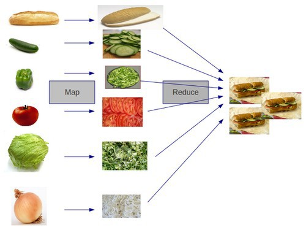

MapReduce is a programming model for processing and generating big data sets with a parallel, distributed algorithm on a cluster. Let’s explain it here as a way to parallelize sandwich making.
Map reduce is a function that
chunks the input,
maps a function over the chunks in parallel, and
reduces the results to a single value.

Figure 1.1: MapReduce to make sandwich.
Map Reduce “Library” Functions:
The Haskell definitions of mapReduce functions, reflected:
{-@ reflect mapReduce @-}
mapReduce :: Int -> ([a] -> b) -> (b -> b -> b) -> [a] -> b
mapReduce n f op is = reduce op (f []) (map f (chunk n is))
{-@ reflect reduce @-}
reduce :: (a -> a -> a) -> a -> [a] -> a
reduce op b [] = b
reduce op b (x:xs) = op x (reduce op b xs)
{-@ reflect map @-}
{-@ map :: (a -> b) -> xs:[a] -> {v:[b] | len v == len xs } @-}
map :: (a -> b) -> [a] -> [b]
map _ [] = []
map f (x:xs) = f x : map f xs
-- chunk :: Int -> [a] -> [[a]]
Of course, for mapReduce to be efficient the map function should be parallelized, e.g., using parMap.
Map Reduce “Client” Functions: Summing a List
Let’s assume that sum is the standard list summing and psum is the mapReduce parallel summing.
-- Standard List Sum
{-@ reflect sum @-}
sum :: [Int] -> Int
sum [] = 0
sum (x:xs) = x + sum xs
-- Parallel Sum
{-@ reflect psum @-}
psum :: Int -> [Int] -> Int
psum n is = mapReduce n sum plus is
-- Reduction Operator
{-@ reflect plus @-}
plus :: Int -> Int -> Int
plus x y = x + y
Can we prove that sum and psum are equivalent?
Proving Code Equivalence: sum and psum
The equivalence proof is an instance of the higher order theorem mRTheorem:
{-@ sumEq :: n:Int -> is:[Int] -> { sum is == psum n is } @-}
sumEq n is = mRTheorem n -- chunk size
sum -- function to map-reduce
plus -- reduction operator
plusRightId -- plus has "right-identity"
sumDistr -- sum is "distributive"
is -- input list
Chunk Definition:
First, let’s define the chunk function that splits a list into chunks of size n.
Question: Define the take and drop functions below that satisfy the following specifications:
{-@ reflect drop @-}
{-@ drop :: i:Nat -> xs:{[a] | i <= len xs }
-> {v:[a] | len v == len xs - i } @-}
drop :: Int -> [a] -> [a]
drop i x = x
{-@ reflect take @-}
{-@ take :: i:Nat -> xs:{[a] | i <= len xs }
-> {v:[a] | len v == i} @-}
take :: Int -> [a] -> [a]
take i x = x
Question: Define the chunk function below that splits a list into chunks of size n.
{-@ reflect chunk @-}
chunk :: Int -> [a] -> [[a]]
chunk i x = [x]
Higher Order Theorem: mRTheorem
The higher order theorem mRTheorem states that:
If f is right identity and op is distributive, then mapReduce is equivalent to sequential.
{-@ mRTheorem :: n:Int -> f:([a] -> b) -> op:(b -> b -> b)
-> rightId:(xs:[a] -> {op (f xs) (f []) == f xs } )
-> distrib:(xs:[a] -> ys:[a] -> {f (xs ++ ys) == op (f xs) (f ys)} )
-> is:[a]
-> { mapReduce n f op is == f is }
/ [len is]
@-}
mRTheorem :: Int -> ([a] -> b) -> (b -> b -> b) -> ([a] -> Proof) -> ([a] -> [a] -> Proof) -> [a] -> Proof
mRTheorem n f op rightId distrib is = undefined
We saw a case study in which map reduce is used to parallelize the sum of a list. Using Liquid Haskell, we can prove that the parallel sum is equivalent to the sequential sum.
Appendix: List Manipulation Functions
We define the list manipulation functions ++ and length below.